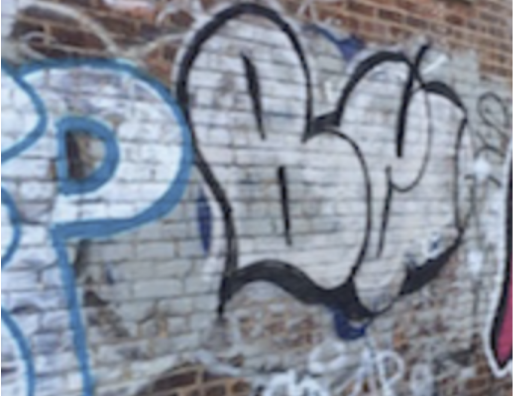

San Francisco Graffiti

Mediums: Google Docs, Phone Camera
I took this image in San Francisco, where I had gone on one weekend. This has many similar qualities to the previous image, in that it is characterised by elaborate bubble letters with interesting coloring. It also seems to have qualities of graffiti, and given that it was on the side of a building in a more run-down part of town, I would guess it was vandalism. One thing I noticed when I took this photo is that the P on the left is outlined with pale blue, while filled with white, the same as the “London” in the previous image. I thought this showed a trend in coloring graffiti with light blue and white, unless it was the same artist or just coincidence. I admire this image for similar reasons to the previous one, in that I really like the way that the letters are drawn out. Once again, however, I am unable to see any real meaning in the piece.